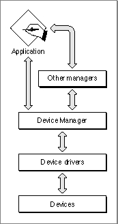
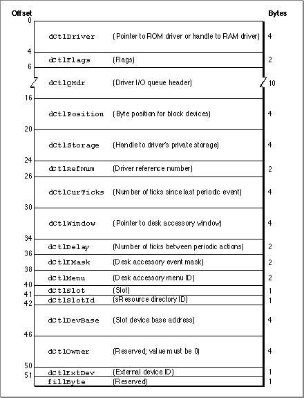
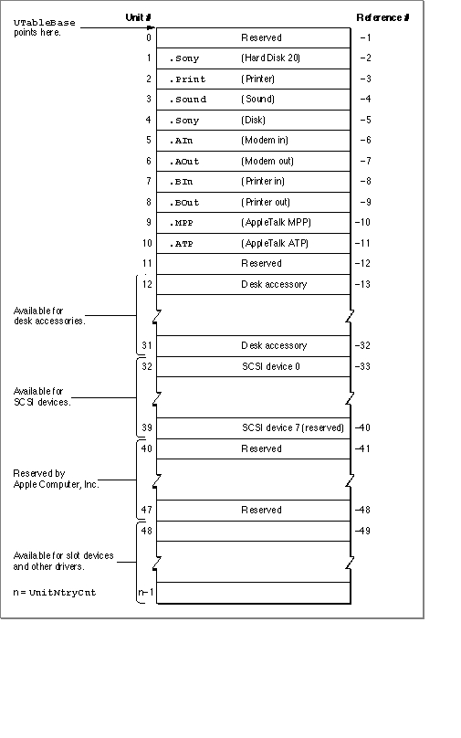
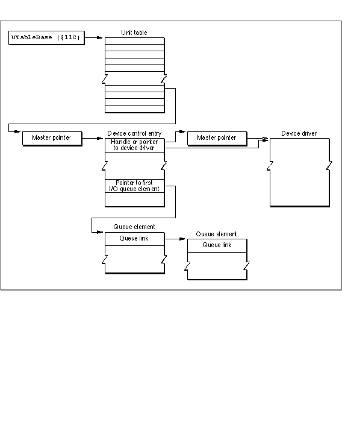
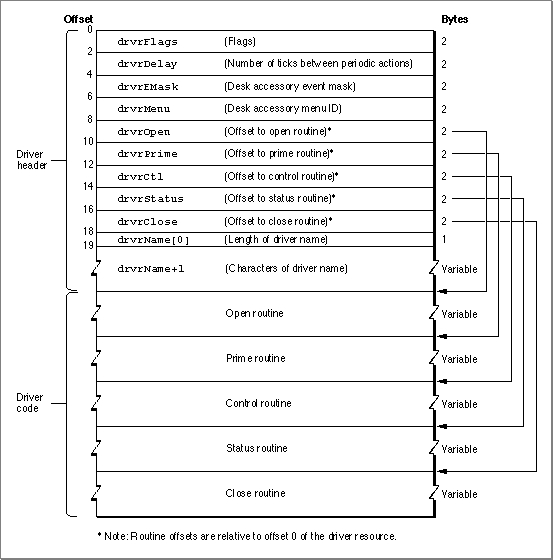

About the Device Manager
The Device Manager provides a common programming interface for applications and other managers to use when communicating with device drivers. The Device Manager also includes support functions useful for writing your own device drivers.Typically, your application won't communicate directly with device drivers; instead, it will call Device Manager functions or call the functions of another manager that calls the Device Manager. For example, your application can communicate with a disk driver by calling the Device Manager directly or by calling the File Manager, which calls the Device Manager. Figure 1-2 shows the relationship between applications, the Device Manager, other managers, device drivers, and devices.
Figure 1-2 Communication with devices

Before the Device Manager allows an application or another manager to communicate with a device driver, the driver must be open, which means the Device Manager has received a request to open the driver, has loaded the driver into memory, if necessary, and has successfully called the driver's open routine.
Your application opens a device driver using one of the Device Manager functions,
OpenDriver,OpenSlot, orPBOpen. These functions return a driver reference number for the driver. You use the driver reference number to identify the driver in subsequent communication requests.Your application communicates with a driver by calling Device Manager functions such as
FSReadorPBRead, and supplying the driver reference number of the device. The Device Manager then invokes a corresponding routine in the device driver to perform the requested operation. The section "Driver Routines" on page 1-12 describes these routines and their relationship to the Device Manager functions.The Device Manager uses several data structures to locate, manage, and communicate with device drivers. These structures are described in the following sections.
The Device Control Entry
The Device Manager maintains a data structure called a device control entry (DCE) for each open driver. The device control entry is a relocatable block in the system heap that contains a handle or pointer to the device driver code, and additional information about the driver. Typically, the Device Manager maintains one device control entry for each open device driver, but it is possible for multiple entries to refer to the same driver.Figure 1-3 shows the device control entry structure. See "Device Manager Reference," beginning on page 1-53, for descriptions of the fields within the device control entry structure.
Figure 1-3 The device control entry

The Unit Table
The Device Manager uses a data structure called the unit table to organize and keep track of device control entries. The unit table is a nonrelocatable block in the system heap, containing an array of handles. Each handle points to the device control entry of an installed device driver. The location of a driver's device control entry handle in the unit table is called the driver's unit number. If the handle at a given unit number isnil, there is no device control entry installed in that position.When you open a device driver, the Device Manager returns a driver reference number for the driver. The driver reference number is the one's complement (logical
NOT) of the unit number.The system global variable
UTableBasepoints to the first entry of the unit table. The system global variableUnitNtryCntcontains the size of the unit table (that is, how many handles it can hold). Figure 1-4 shows the organization of the unit table, including the locations of some of the standard device drivers reserved by Apple Computer, Inc.
The Driver I/O Queue
The Device Manager maintains an I/O queue for each open device driver. An I/O queue is a standard Macintosh Operating System queue of typeioQType, as described in the chapter "Queue Utilities" in Inside Macintosh: Operating System Utilities.At the head of a device driver's I/O queue is the request currently being processed by the driver. The rest of the queue contains pending I/O requests--those the Device Manager has received but not yet sent to the device driver. This queue allows your application to request a data transfer with a busy device and accomplish other tasks while the device processes previous requests.
With respect to the I/O queue, the Device Manager allows you to make three types of requests: asynchronous, synchronous, and immediate.
- Asynchronous requests. When you make an asynchronous request, the Device Manager places your request at the end of the driver I/O queue and returns control to your application--potentially before the request is processed. Your application is free to perform other tasks while the device driver processes the requests in its queue. The Device Manager provides mechanisms for your application to determine when the driver has processed the request.
- Synchronous requests. When you make a synchronous request, the Device Manager places your request at the end of the queue and waits until the device driver has handled every request in the queue, including the synchronous one, before returning control to your application. Notice there can never be more than one synchronous request in a driver I/O queue at any given time.
- Immediate requests. The Device Manager sends immediate requests directly to the device driver, bypassing the queue, and returns control to your application when the request is complete. Because the device driver might be in the middle of processing another request, you must make sure the driver is reentrant before making an immediate request. A reentrant driver is capable of handling multiple requests simultaneously. As some device drivers are not reentrant, you should always consult a driver's documentation to determine if it supports immediate requests.
Figure 1-5 shows the relationship of the unit table, device control entry, and I/O queue to a device driver.
- IMPORTANT
- The terms synchronous and asynchronous are used here to describe how the Device Manager queues your I/O requests. How a device driver processes these requests (synchronously or asynchronously) depends on the design of the driver. When you make a synchronous request to a device driver, the Device Manager waits for the driver to complete the request, regardless of whether the driver handles the request synchronously or asynchronously.

Figure 1-5 Relationship of the Device Manager data structures

Driver Routines
Every device driver must provide a set of routines for handling requests from the Device Manager. When an application or another manager calls a Device Manager function, the Device Manager invokes one of the following routines in the designated device driver:Each driver routine is responsible for handling specific types of Device Manager requests. Table 1-1 shows the Device Manager I/O functions and the driver routines responsible for handling them. The Device Manager I/O functions are described in "Using the Device Manager," beginning on page 1-14. The section "Writing a Device Driver," beginning on page 1-24, describes the driver routines.
- The open routine allocates memory and initializes the device driver's data structures. It may also initialize a hardware device or perform any other tasks necessary to make the driver operational. All device drivers must implement an open routine.
- The close routine deactivates the device driver, releases any memory allocated by the driver, removes any patches installed by the driver, and performs any other tasks necessary to reverse the actions of the open routine. All drivers must implement a close routine.
- The control routine is usually used to send control information to the device driver. The function of this routine is driver-dependent. This routine is optional and need not be implemented.
- The status routine is usually used to return status information from the device driver. The function of this routine is driver-dependent. The status routine is optional and need not be implemented.
- The prime routine implements the input and output functions of the driver. This routine is optional. If the prime routine is implemented, it must support either read functions or write functions, or both.
Driver Resources
Device drivers are usually stored in driver resources, which can be located in applications, system extension files, or the firmware of expansion cards. A driver resource consists of a header followed by the driver code. The header contains information about the driver such as which driver routines are implemented and where the routines are located within the driver code. The Device Manager copies the relevant information from the header into the device control entry when you open the driver. Figure 1-6 shows the structure of a driver resource. The section "Creating a Driver Resource," beginning on page 1-24, describes driver resources in detail.Figure 1-6 Structure of a driver resource

Subtopics
- The Device Control Entry
- The Unit Table
- The Driver I/O Queue
- Driver Routines
- Driver Resources